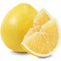
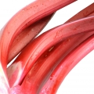
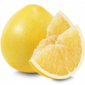
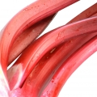

My favorite fragrances
Pick a scent

Odette
Graceful vulnerability, Living doll, Pastel blush walls (dusted in white and bronze paint), Wistfulness for another universe outside of time and space, 7 Up & half a grapefruit as a snack, A first encounter with a sparkly stranger
 



Poets of Berlin
Berlin, a city that is alive with the same kinetic, magnetic energy that attracted David Bowie for a few formative, recuperative and prolific years in the Seventies. Perpetual creative movement embodied in a bold collision of blueberry, lemon, bamboo, green wild orris and Haitian vetiver.
Whiff of Wafflecone
Made in collaboration with Salt and Straw ice cream. Notes vanilla, salted caramel, Saigon cinnamon, heavy cream, sandalwood, orgeat, scoop shop.

Unknown Pleasures
The legendary indie best seller Unknown Pleasures is a perfect gourmand perfume that reflects perfumer John Pegg's memories of walking down the chilly streets of London,
listening to Joy Division, while sipping on a warm cup of London Fog.
The fragrance opens up with the smooth flavor of Earl Grey tea with honey and a zing of lemon.
The drydown softens into cozy vanilla, dreamy tonka bean and the signature waffle cone base.
Bianco Latte
The sheer bliss of a warm embrace. The abiding memory of a bite of sweetness shared between loved ones. The deep satisfaction of complete comfort. This is Bianco Latte, an unforgettable cloud of gourmand perfection- mouthwatering ribbons of caramel swirled with syrupy honey and indulgently creamy vanilla, but given buoyant sensuality with a pillowy cloud of divine white musk. Playful yet seductive, Bianco Latte is a gourmand for those who indulge all sides of their sweet tooth.
Intense Cafe
Intense Cafe is a love affair between rose and coffee. Caressing your skin with delectable notes of sugared vanilla, amber, and musk, this intoxicating blend lingers in the air..